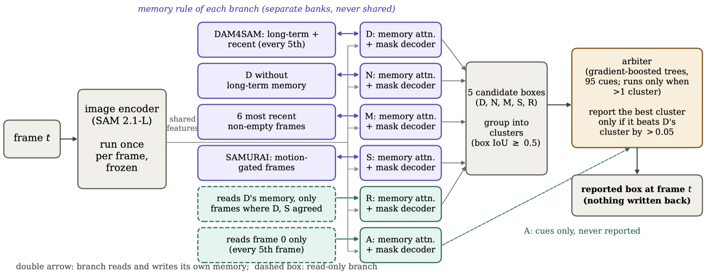

| Tracker | AUC | P@20 | NP |
|---|---|---|---|
| Ours | 77.20 | 83.19 | 80.50 |
| SENTRY-D4S | 75.58 | 81.51 | 78.95 |
| SAMURAI | 74.88 | 79.70 | 77.51 |
| DAM4SAM | 74.78 | 80.54 | 78.12 |
| HiM2SAM | 74.46 | 78.98 | 76.72 |
| SAM2.1 | 69.49 | 73.56 | 71.88 |
LaSOT test set, 280 sequences; all six trackers re-scored with one box read-out (mask bounding box) and the official LaSOT protocol.

One frozen SAM 2.1-L: the image encoder runs once per frame and six branches share its features, each keeping its own memory under its own rule (DAM4SAM's distractor-aware rule, SAMURAI's motion gate, recency only, no long-term memory, and two read-only branches); no branch writes into another's. Each frame, the candidate boxes are grouped by agreement; when the groups disagree, a gradient-boosted model scores each group from 95 cues the branches already produce and leaves the default branch only when another group is clearly better. The arbiter only chooses the output and never changes any memory, so the tracker is strictly causal and runs online.